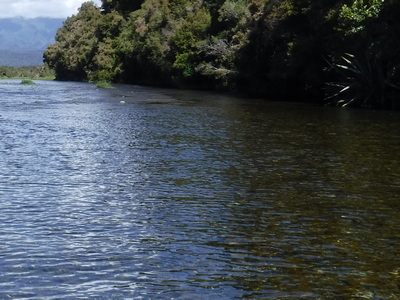
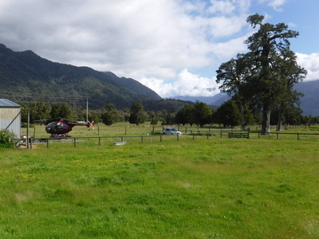
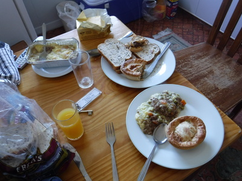

釣行日誌 ＮＺ編 「一期一会の旅：A Sentimental Journey」
ウナギとブラウン
11/22(THU)-7
そこから少し上がると、右岸の空き地に赤いトヨタが見えた。ディーンの車まで戻ってきたのだ。やれやれ今日はこれまでか、とリュックを降ろすとディーンが、
「ゴウ、まだこの上に良い淵があるぞ。そこを攻めてから終わろう。」
と言う。彼は自分の重いバックパックをピックアップトラックの床下に押し込み、身軽になって再び上流へと歩み出す。

長い長いトロ淵を下流から静かに偵察して行くと、ディーンの歩みがピタリと止まる。
「ゴウ、見えるか？」
指さす方向には、黒い魚影が、ごく浅くほとんど流れの無い位置にじっとしている。
「ようし、今度もアントで行こう。」
ラインを引き出し、いざキャスト！という段になってから、ふと彼が
「ちょっと待てよ....」
と言いながら静かに近づいて行く。
「ゴウ！こりゃダメだ。長過ぎる。ウナギだ！」
僕も近づいて見てみると、一見大物鱒に見えた魚影は太く長いウナギで、ゆっくりグネグネと身をくねらせている。
『ウナギだったかァ....』
いささかガックリ来たが、めげずに次の魚影を目指す。
さらに50mほど上流まで来たら、やはり川の真ん中あたり、流れの無い所に黒い魚影が沈んでいる。今度は鱒らしいがそれほど大きくは無い。
「ゴウ、ちょっとオレがやってみていい？」
いささか腕に負担を感じていたので、どうぞどうぞとロッドを譲る。
ダレかさんとはまったく違う流麗なロングキャストでフライラインが伸びて行き、第１投でドンピシャの位置にアントが浮かぶ。黒い魚影の真上を流下したが全く反応は見られない。
「おかしいなぁ....？」
彼は小さなビーズヘッドニンフに交換し、再度振り込む。またしても無反応。
「あいつ、ちょっとおかしくは無いか？」
ディーンはそう言ってから僕にロッドを手渡すと、ごく静かに、抜き足差し足で鱒に近寄って行く。あと1ｍほどまでに近づいても鱒は逃げない。50cm、30cm。彼は両手を水中に入れ、動かない鱒の下に差し込みそっとホールドした。鱒は難なくディーンの手中に入ってしまった。
「ゴウ！来てみろ。こいつは病気だぞ。」
歩み寄って見てみると、彼が持ち上げた鱒は、右目が大きく飛び出しており、暴れる元気も無い。
「こりゃウナギの獲物になってしまうだろうな....」
と、ディーンはつぶやいて、その鱒をリリースしてやると力無く泳ぎ去って行った。
「ようし、今日はこのへんで上がるか。」
時刻はちょうど午後４時を回ったところだった。２人は下流へ戻り、車を目指した。
トラックに戻ってウェーディングシューズなどを脱ぎ、汗ばんだシャツを着替え、車に乗り込んで再び長い農道を戻り、浅瀬を渡り、荒れた河原を乗り越えて国道６号線に出た。いったん左へ曲がり、ディーンが持って来た撮影機材を預けるために、前回の釣行でお世話になったヘリのパイロットのジェームズさんのお宅へ寄った。

ヘリの格納庫前にトラックを着けると、別の小屋からジェームズさんが出てきた。挨拶すると、８年前の僕のことを覚えていてくれて、久しぶりだなと言ってくれた。ディーンはドローンやビデオの機材を格納庫に仕舞ってから、しばしの世間話をジェームズさんと始めた。
ドライブウェイ脇の大きな立木（松の１種？）も前回同様変わりなく、遠くで飼い馬が１頭草を食んでいた。彼らの立ち話も終わり、僕たちはトラックに乗り込んでロッジを目指した。
夕方６時過ぎにロッジに帰り着き、釣り具を降ろし、ディーンが手早く夕食の支度を始めた。今夜は冷凍パックで持って来たグレースさん手作りのミンス（挽肉料理）と市販の冷凍パイとを電気オーブンで温め、トーストとオレンジジュースの夕食である。ディーンは食後にジェームズさんと撮影の仕事があるそうで、ビールは飲まなかった。

夕食を済ませて７時半頃にディーンが出かけた。僕はテレビを消して、持ってきたボイスレコーダー兼MP3プレーヤーで、収録してあった松任谷由実のアルバム「時の無いホテル」をかけた。ごく小さいが、スピーカーが付いているのでイヤホン無しでも聴けるのである。懐かしい歌声を聴きながら、今日の釣りの出来事をメモ帳に書き留め始めた。窓の外はしだいに光が落ちてきて、異国の地で流れる彼女の歌声が、何か特別な哀愁を帯びて聞こえた。今日１日であまりにたくさんのエピソードがあったので、メモ帳は数ページを要した。覚えきれずに書き切れなかったこともたくさんあった。
２時間ほどしてディーンが帰ってきた。ジェームズさんと協力して、今夜の満月の真ん中に黒いシルエットでヘリが飛び去って行く、という幻想的なシーンの撮影に見事成功したそうだ。地上から無線でもう少し左とか上とか指示を出して思い通りにカメラのフレームに収まるよう飛んでもらうのにはとても苦労したと言っていた。モニターの液晶画面で見せてもらうと、模様がはっきり映るほど大きな月のど真ん中に黒いヘリが小さくなってゆく、まるで映画「Ｅ・Ｔ」の１シーンのような見事な映像が撮れていた。ディーンがフリーランスの映像カメラマンとして生計を立てているのも納得できる出来映えで、なるほどと感心させられた。
しかし、考えてみると、ジェームズさんのお宅にあるヘリポートには夜間発着のための誘導用照明装置は見当たらなかった気がしたが、いったい夜中にどうやってヘリを離着陸させているのだろうと不思議だった。機体に装備されているライトで十分なのだろうか？ あの家のそばには高い木が何本もあって、８年前に乗せてもらった時には着陸時にとても怖かったことを思い出した。
ソファーでくつろいでいたディーンが、流れているユーミンを聞きつけて、
「それは何の曲だい？」
と訊ねてきたので、
「ああ、これは大昔の日本のシンガーソングライターの歌さ。僕のお気に入りなのさ。」
そう答えると、彼はふ～ん、といった顔をしていた。
10時近くになり、僕はシャワーを浴びることにした。裸になって入ってみると、簡素なシャワールームは温水と冷水の蛇口が別々のタイプで、先に温水を最高温度にして出しっぱなしにして少々待った。ところがいっこうに温かい水が出てこない。11月下旬とはいえ、サウス・ウェストランドの夜は冷える。温水はまだ出ない。故障のようだったので、こりゃこのままじゃ風邪を引いてしまうと思い、シャワーは諦め、出てパジャマを着た。ディーンに
「ここのシャワー、壊れているみたいだよ。」
と言うと、明日ロッジの主人に聞いておくよと言った。
さすがに疲れが出たので、体は温まっていなかったがベッドに入った。電気を消してしばらくすると、どこからかププーンと蚊の飛ぶ音が。
「こりゃ困ったな....」
また起き出してダイニングルームへ行ってあたりを探すと、殺虫スプレーを見つけたが、中身がほとんど残っていない。まぁあるだけ使ってしまえ、とベッドルームじゅうに残りを吹きまくってから眠りに就いた。まだ初日というのにとても長かった１日が終わった。汽水域のラグーンで、あれだけたくさん目撃した白銀色した大型シーラン・ブラウントラウトを１尾も釣り上げられなくて残念だったが、また次回の宿題として、腕を磨いて再挑戦だ。
釣行日誌ＮＺ編 目次へ
サイトマップ
ホームへ
お問い合わせ